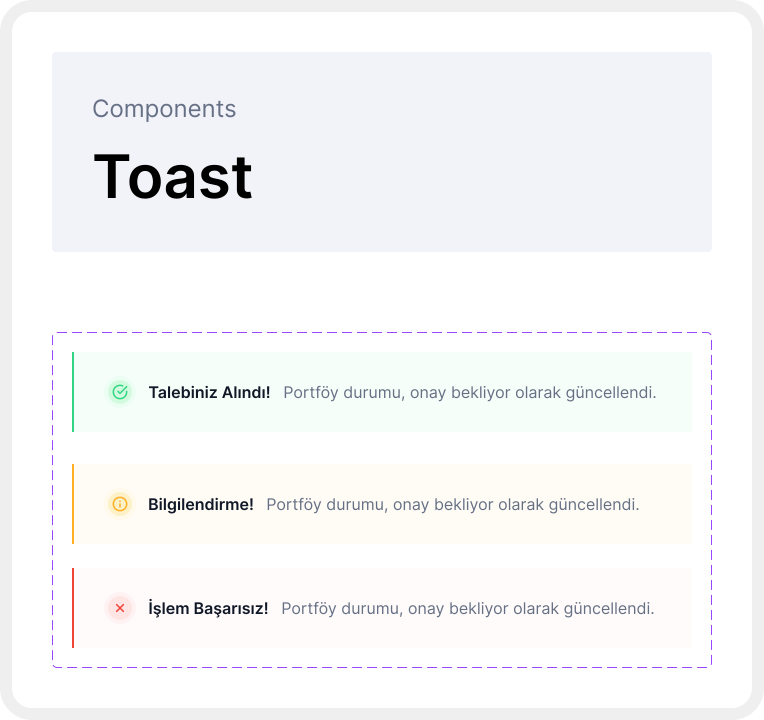

Emlak Danışmanları için Uçtan Uca Bir CRM Deneyimi Tasarlamak
emlapp, gayrimenkul danışmanlarının portföy, müşteri ve randevu süreçlerini tek platformda yönettiği sektöre özgü bir CRM ürünüdür.
Genel Bakış
Gayrimenkul danışmanlarına yönelik uçtan uca bir CRM. Dashboard, kullanıcı profili, portföy yönetimi, portföy detay sayfaları ve pazarlama süreçlerini kapsıyor.

Problem
Sektörde alternatifler vardı. Hedef, hem arayüz hem kullanılabilirlik açısından daha iyi bir deneyim sunmaktı — danışmanın gerçek iş akışına uyan, öğrenmesi kolay, görsel olarak sade bir sistem.
Süreç
Tasarıma atomic design sistemiyle başladım. Önce en küçük yapı taşlarını — renk, tipografi, spacing token'larını — tanımladım. Buradan component'lere, oradan template'lere uzanan bir yapı kurdum. Böylece sisteme yeni bir ekran eklendiğinde her şey tutarlı kalıyordu.
Wireframe aşamasını atlayıp doğrudan high-fidelity'e geçtim. Ekranları direkt gerçek veriyle, gerçek component'lerle tasarlamak, olası sorunları çok daha erken görünür kıldı.


Çözüm
Dashboard, kullanıcı profili, portföy listesi, portföy detay sayfası, portföy ekleme akışı ve pazarlama süreçleri olmak üzere birden fazla modül tasarladım. Her modülü kendi içinde bağımsız ele aldım — ama hepsini aynı design system üzerinden kurduğum için platform bir bütün gibi hissettiriyor.
Portföy ekleme akışı adım adım ilerleyen bir form yapısına otururken, portföy detay sayfası danışmanın ihtiyaç duyduğu tüm bilgiyi tek ekranda sunuyor. Pazarlama süreçlerinde ise portföyün hangi aşamada olduğu — satışta mı, kiralandı mı, beklemede mi — takip edilebiliyor.

Sonuç
emlapp, yaklaşık bir yıllık sürecin ardından canlıya alındı ve aktif olarak kullanılıyor. Danışmanların dağınık araçlara olan bağımlılığı tek bir platforma taşındı.
Bu proje, ölçek ve karmaşıklık açısından en kapsamlı iş deneyimlerimden biri oldu. Sıfırdan kurduğum bir sistemin gerçek kullanıcılara ulaşması, tasarım kararlarımın sahaya yansımasıydı.